Haz clic en cada uno de los conceptos clave para conocer sus definiciones, ejemplos y controles asociados:
Definición: Cualquier fuente, situación o acto con el potencial de causar daño a la salud de los trabajadores, a los equipos o las instalaciones. El peligro se compone de los siguientes elementos:
Elementos del Peligro:
Elemento o condición con energía propia (ejemplo: maquinaria, electricidad, ruido, sustancias químicas, etc.).
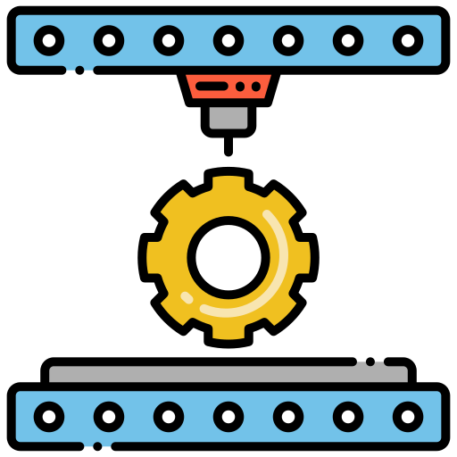
Entorno o circunstancia que propicia un accidente (ejemplo: pisos resbaladizos, lluvia, etc.).
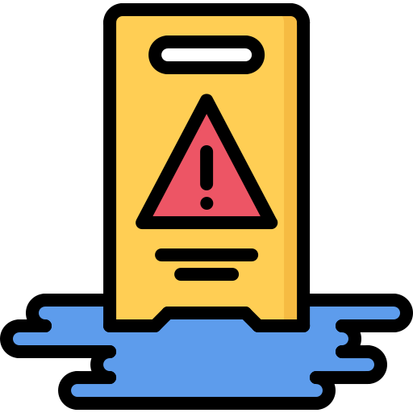
Comportamiento inseguro del trabajador (ejemplo: usar el celular mientras conduce, no usar elementos de protección personal, etc.).
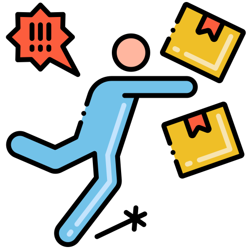
¿A qué peligros estamos expuestos en las instalaciones administrativas de SierraCol Energy?
Ruido, iluminación.
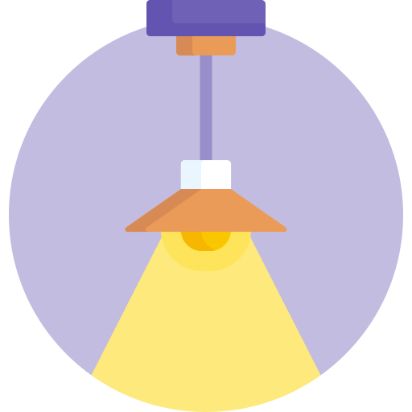
Virus y bacterias.
Posturas inadecuadas, movimientos repetitivos, levantamiento incorrecto de cargas, posturas forzadas.
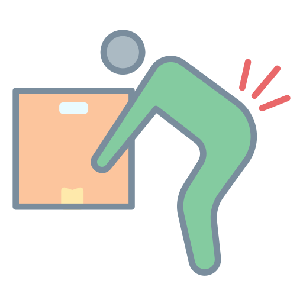
Jornada laboral, carga excesiva de trabajo, fatiga, mala organización del tiempo, acoso laboral.
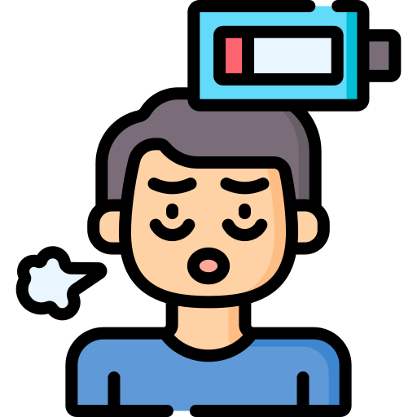
Uso incorrecto de herramientas o equipos, herramientas o equipos defectuosos.
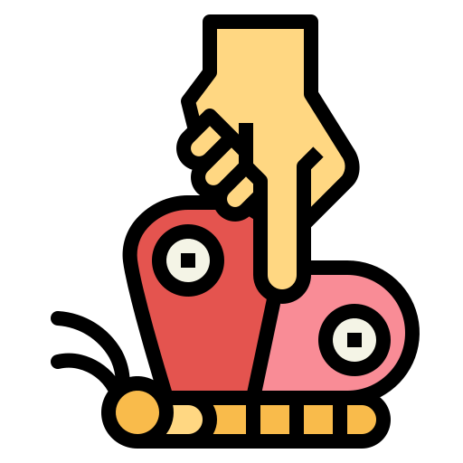
Piso húmedo, falta de orden y aseo, escaleras, desniveles.
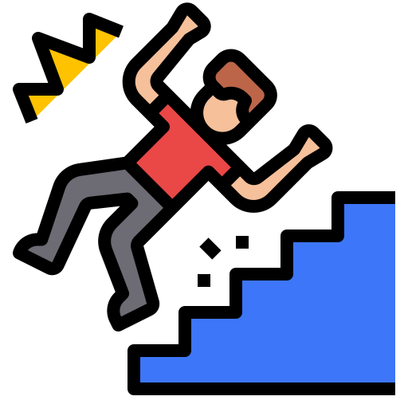
🛡️ Controles para los peligros (Torre Once 93)
Los controles son medidas que se utilizan para eliminar, sustituir o disminuir la probabilidad de que el peligro se materialice. Para los peligros a los cuales estamos expuestos en la Torre Once 93, podemos aplicar estos controles:
- Ruido: Limitar el uso de audífonos.
- Iluminación: Verificar que el nivel de iluminación de tu puesto de trabajo sea adecuado (ni excesivo ni deficiente).
- Virus y bacterias: Lavarse las manos continuamente y utilizar tapabocas en la oficina si tú o tus familiares tienen síntomas de gripe.
- Postura prolongada y movimientos repetitivos: Realiza pausas activas por lo menos 2 veces al día. Recuerda participar en las pausas activas programadas por SierraCol Energy.
- Levantamiento incorrecto de cargas: Recuerda levantar las cargas doblando las rodillas, haciendo la fuerza con las piernas y manteniendo la espalda recta.
- Posturas forzadas: Limita el tiempo de las posturas forzadas. Por ejemplo, si debes realizar una actividad que implica mantener los brazos levantados por encima de la línea de los hombros, debes hacerlo máximo por 2 horas.
- Carga de trabajo y mala organización del tiempo: Prioriza tus actividades y utiliza herramientas como Copilot para agilizar tus actividades.
- Fatiga: Realiza pausas activas mentales.
- Acoso laboral: Puedes acudir al comité de convivencia laboral o al área de PCM para que te orienten.
- Herramientas defectuosas: Evita utilizar herramientas en mal estado y notifica a tu empresa.
- Uso incorrecto de herramientas: Usa las herramientas solo para lo que están diseñadas.
- Elementos de protección: Usa elementos de protección personal.
- Piso húmedo: Respeta la señalización de piso húmedo y transita con cuidado. Si ves un piso húmedo sin señalizar, informa al área HES.
- Falta de orden y aseo: Evita obstruir pasillos, escaleras o equipos de emergencia, mantén tu puesto de trabajo en orden, desciende/asciende por las escaleras utilizando el pasamanos y no mires el celular mientras estás caminando.
Ahora que ya conoces el concepto de peligro, vamos a conocer el concepto de riesgo: ⚡
Definición: El riesgo es la probabilidad de que el peligro se materialice y cause una lesión, junto con la gravedad de esta.
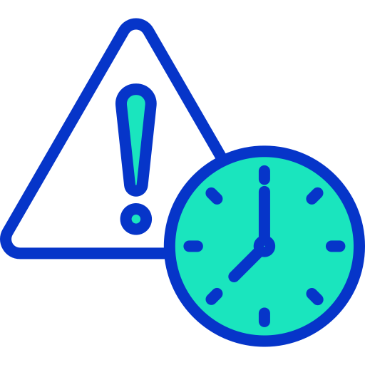
Al aplicar controles sobre el peligro, estamos disminuyendo el RIESGO de que ocurra un accidente. 🛡️
¡Es deber de todos en la empresa aportar para que el riesgo disminuya y así el peligro no se materialice generando un casi accidente, o en el peor de los casos, un accidente! 🚨
Definición: Zona o trayectoria física donde una persona se expone a sufrir lesiones debido a la liberación de energía, movimiento de equipos o caída de objetos.
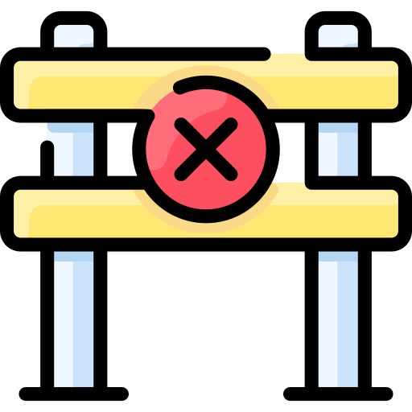
Ejemplo: Ubicarse debajo de una carga suspendida por una grúa o detrás de un vehículo en reversa.
Como lo veíamos en el concepto de peligro, este tiene 3 elementos que lo componen: fuente, situación o acto. En el caso de la Situación, nos encontramos con las CONDICIONES INSEGURAS. 🛠️
¿Qué es una condición insegura?
Una condición insegura es cualquier situación o estado físico, material o ambiental en el lugar de trabajo que representa un peligro latente. Estas deficiencias pueden desencadenar un accidente, una enfermedad laboral o daños materiales si no se corrigen. ⚠️
EJEMPLOS DE CONDICIONES INSEGURAS:
Pisos resbaladizos, escaleras sin pasamanos. 🛗
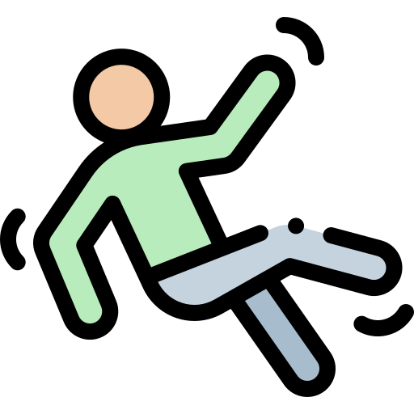
Iluminación deficiente o falta de ventilación, cables eléctricos expuestos o herramientas en mal estado. 🔌
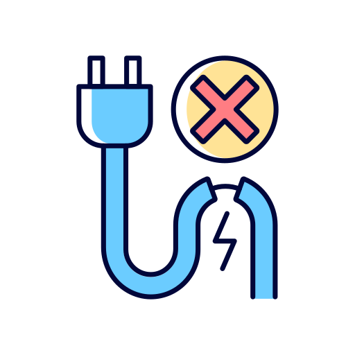
Pasillos obstruidos, acumulación de desechos o almacenamiento incorrecto de sustancias químicas. 🧪
- 📢 Notificar inmediatamente al área HSE o a tu supervisor a cargo.
- ✔️ Si está dentro de tus posibilidades y cuentas con la capacitación necesaria, elimina el peligro (ejemplo: señalizar una zona húmeda, almacenar correctamente las sustancias químicas de acuerdo a su compatibilidad).
En el caso de la parte de Acto, nos encontramos con los ACTOS INSEGUROS: 🚫
¿Qué es un acto inseguro?
Un acto inseguro es toda acción o decisión humana que incumple normas o procedimientos, aumentando la probabilidad de sufrir un accidente laboral o una enfermedad. Suele originarse por exceso de confianza, afán de ahorrar tiempo o falta de capacitación. ⚠️
Ejemplos de actos inseguros:
No usar el equipo de protección personal (EPP) adecuado.
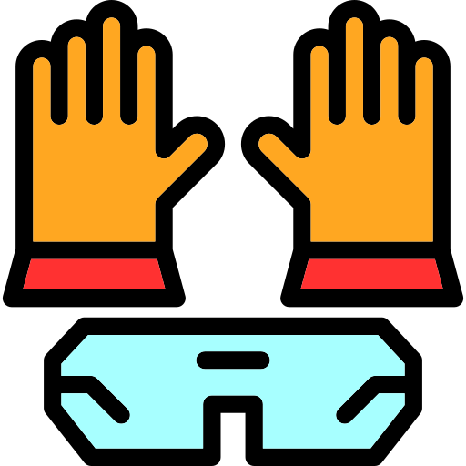
Operar maquinaria o vehículos sin autorización o a velocidades inadecuadas.
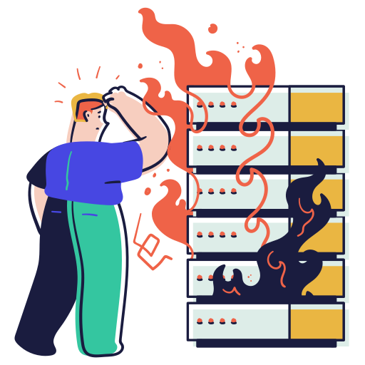
Bloquear pasillos o salidas de emergencia.
Para evitar que realices actos inseguros durante tu trabajo, te recomendamos analizar cada una de las actividades que realizas, qué peligros implican y qué controles puedes aplicar para los peligros. Al tener consciencia de qué controles debes aplicar, es muy probable que no realices actos inseguros.
✋ Detener la actividad: Si en algún momento de tus actividades laborales consideras que las estás realizando de forma insegura, te invitamos a detener la actividad, a verificar qué controles estás aplicando e iniciar nuevamente la actividad aplicando todos los controles necesarios.
🤝 Intervención respetuosa: En caso de ver a un compañero de trabajo realizando un acto inseguro, te invitamos a acercarte a él y de forma respetuosa mencionarle que está realizando la actividad de forma insegura y qué controles puede aplicar. En caso de que el compañero haga caso omiso a tus recomendaciones, te invitamos a hacer el reporte ante el área HES.
Al reportar que tu compañero está realizando actos inseguros, estás ayudando a salvaguardar su salud y su vida. Es preferible reportar y evitar que el compañero tenga un accidente, a mantenernos callados y posteriormente ver las consecuencias de este acto inseguro.
También recuerda que si tu compañero te reporta, no lo hace con el objetivo de hacerte daño o molestarte, lo hace con el objetivo de salvaguardar tu vida. ❤️
Definición: Evento repentino en el trabajo que tuvo el potencial de causar lesiones, pero que no resultó en daños o heridas corporales (casi-accidente).
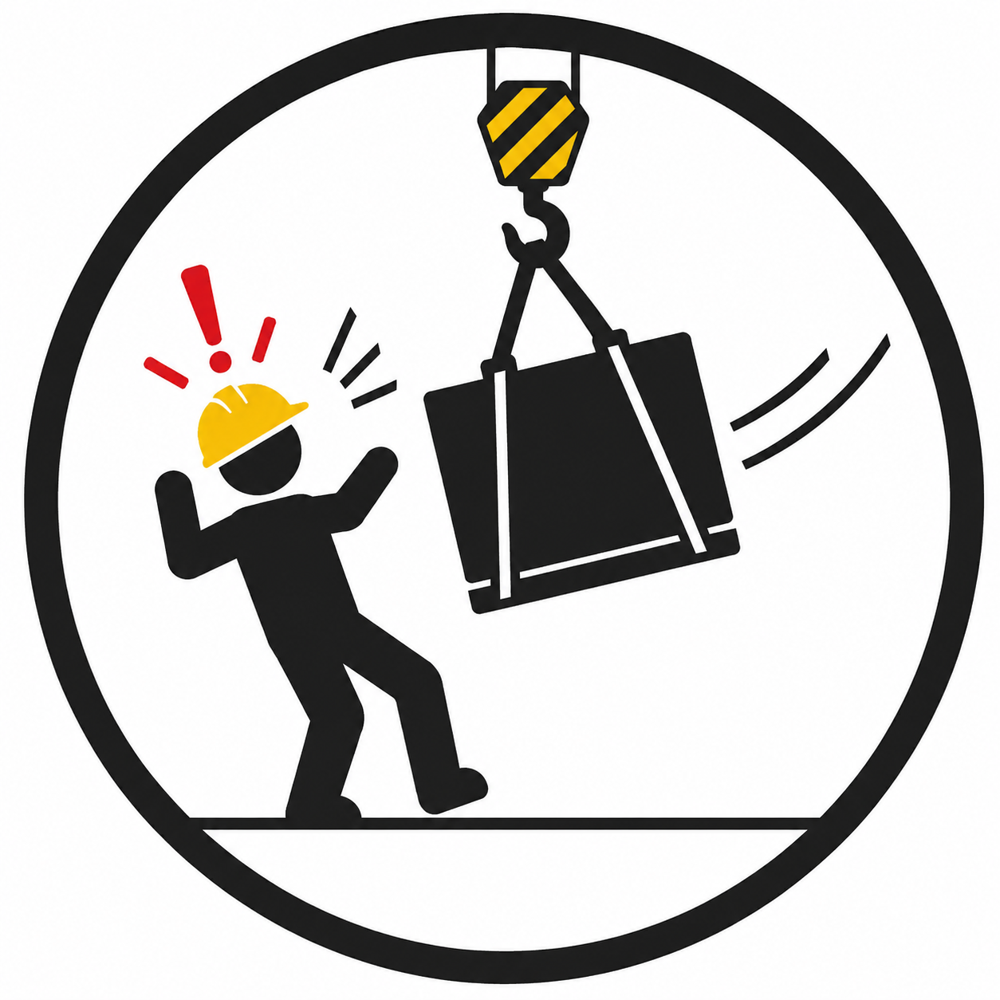
Ejemplo: Resbalar en un piso húmedo pero lograr sostenerse sin caer y sin sufrir ninguna lesión.
Definición: Suceso repentino por causa o con ocasión del trabajo, que produce en el trabajador una lesión orgánica, perturbación funcional, invalidez o muerte.

Ejemplo: Sufrir una fractura al caer de una escalera por falta de pasamanos o por pisar una superficie húmeda.
Definición: Estado patológico contraído como resultado directo de la exposición a factores de riesgo inherentes a la actividad laboral o del medio en el que se trabaja.
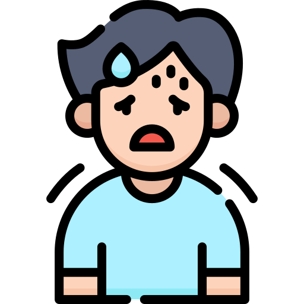
Ejemplo: Contraer túnel carpiano debido al uso repetitivo y prolongado del mouse sin pausas activas ni soporte ergonómico.
El programa de disciplina operativa de SierraCol Energy está enfocado en tener altos estándares de desempeño, mediante el cumplimiento estricto de procedimientos y asegurando que todas las actividades se realicen consistentemente, de forma segura y eficiente, con el fin de eliminar las lesiones y los incidentes de proceso. 🛡️
Objetivos del programa de disciplina operativa
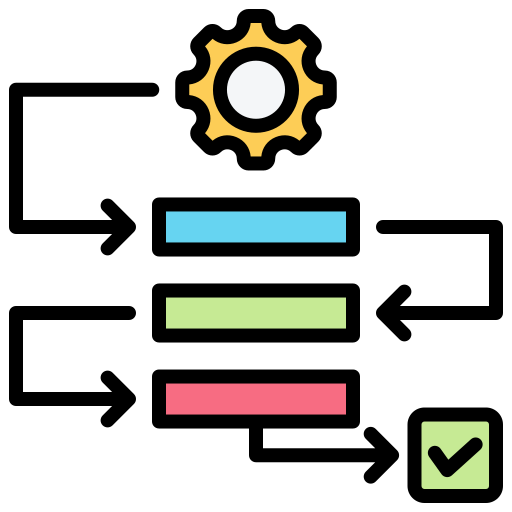

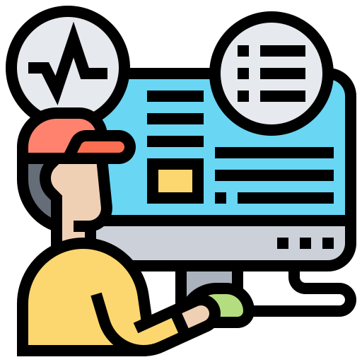

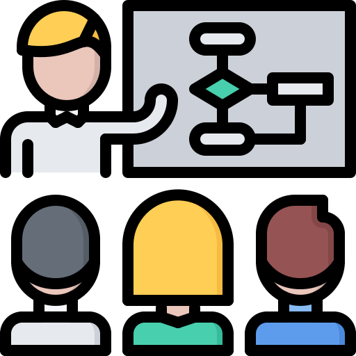
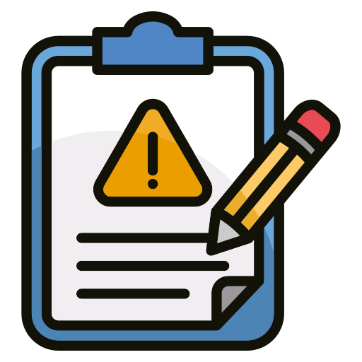
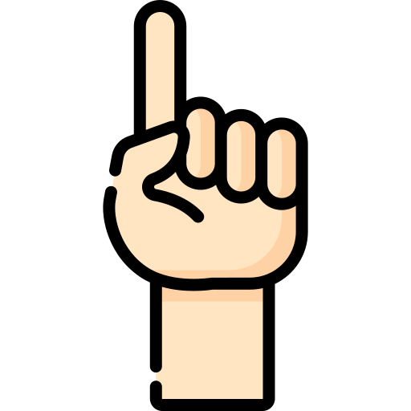
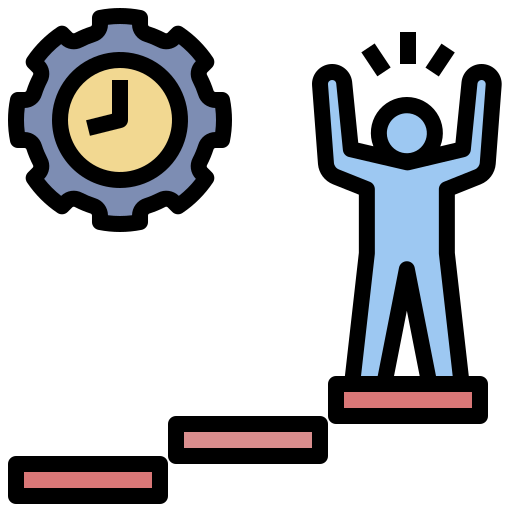
Ahora que conoces los conceptos de acto inseguro, condición insegura y casi-accidente, te invitamos a reportar estos eventos a través de nuestro código QR o a través de Nuestro Espacio en el link Reporte Aquí. 📝
Reportar por Código QR
Escanea el código QR con la cámara de tu celular para acceder directamente al formulario de registro HES de SierraCol Energy desde tu dispositivo móvil.
Reportar por Nuestro Espacio
Ingresa al portal corporativo Nuestro Espacio (Intranet) y, en la sección de Enlaces rápidos, haz clic en el enlace "Reporte aquí Observaciones de Comportamiento, Condiciones...".
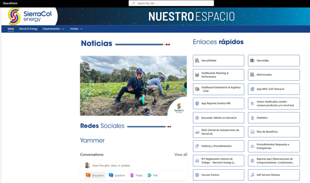
En caso de que tú o un compañero hayan presentado un accidente de trabajo o una emergencia médica, debes seguir de forma estricta los siguientes pasos: 🚑
Paso 1: Notificar al Brigadista
Reporta al brigadista de tu piso inmediatamente sobre el accidente ocurrido.
Paso 2: Traslado al Consultorio
Dirígete hacia el consultorio médico ubicado en el piso 4. Si es necesario, solicita ayuda al brigadista para trasladarte o trasladar a tu compañero hasta este punto.
Paso 3: Valoración Médica
En el consultorio médico se realizará una valoración del evento y se determinará si es necesario realizar traslado a un centro médico especializado. Permite que el profesional médico realice la valoración necesaria.
Paso 4: Traslado de Emergencia
En caso de ser necesario el traslado a un centro médico, se utilizará el convenio de área protegida con Coomeva. Permite que se realice el traslado a través de este medio.
Paso 5: Desfibrilador Automático (DEA)
En caso de ser necesario, la brigada de emergencias y el personal médico procederán a utilizar el desfibrilador electrónico automático (DEA) para atender la emergencia vital.
Paso 6: Reporte a ARL
Finalmente, en caso de accidente de trabajo, reporta a tu empresa contratista para que este evento sea formalizado y reportado formalmente ante la ARL.
Protocolo de Emergencias en Bogotá
Para reporte de emergencias en Bogotá, dirígete al brigadista asignado en tu piso. En caso de que no se encuentre, comunícate a las líneas de emergencias que te presentamos a continuación. Una vez se reciba el reporte de la emergencia, el Command Center activará los grupos y equipos necesarios para afrontar la emergencia.
Directorio Telefónico de Emergencias
Línea de atención de emergencias – Command Center
PrincipalLíder Médico
Coordinador HES
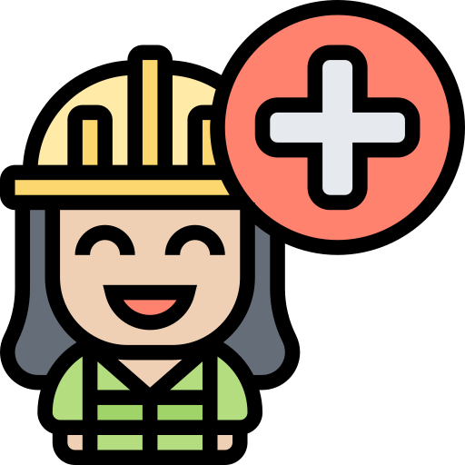
Líder Brigada de Emergencias
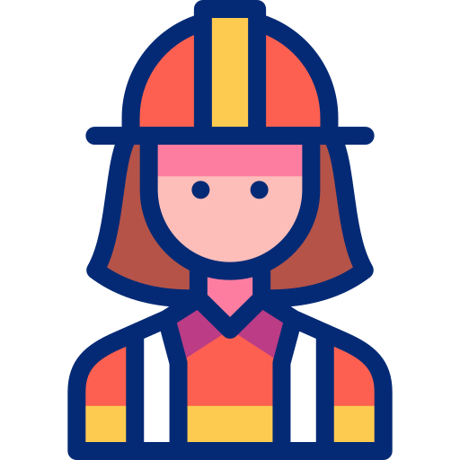
Coordinador Operativo de Mantenimiento

Emergencias Médicas Coomeva
Área Protegida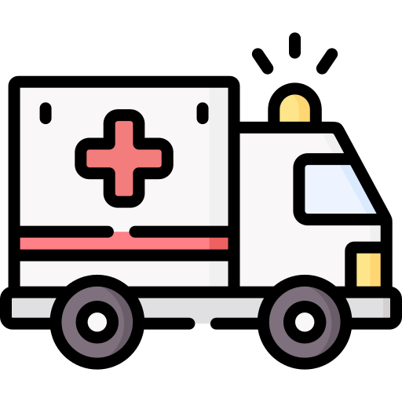
En SierraCol Energy tenemos establecido un programa de gestión de residuos para la torre Once 93. A continuación, te presentamos el código de colores establecido en los puntos ecológicos ubicados en los diferentes pisos de la torre Once 93 para que dispongas de tus residuos de acuerdo con el tipo de residuo y color de la caneca: ♻️
Cáscaras de frutas, restos de comida, hojarasca.

Plástico limpio, cartón, papel, vidrio y metales.
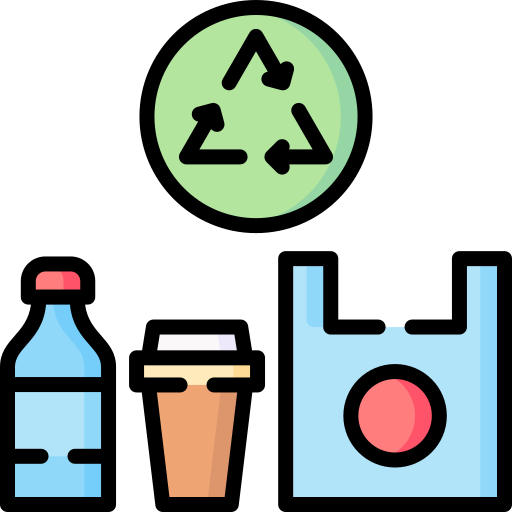
Papel higiénico, servilletas sucias, tapabocas, restos de barrido.

Trapos con aceite, filtros usados, pilas, guantes contaminados con químicos.
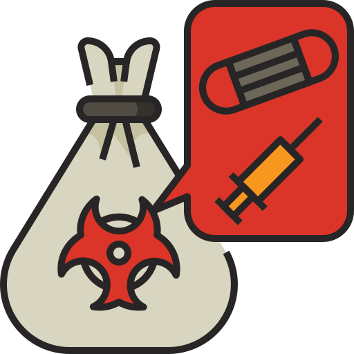
A continuación te presentamos tus responsabilidades en temas de seguridad y salud en el trabajo:
Participar y contribuir al cumplimiento de los objetivos de seguridad y salud en el trabajo
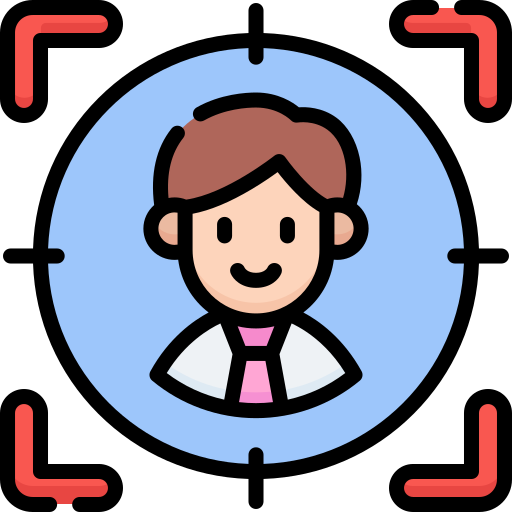
Suministrar información clara, veraz y completa de tu estado de salud
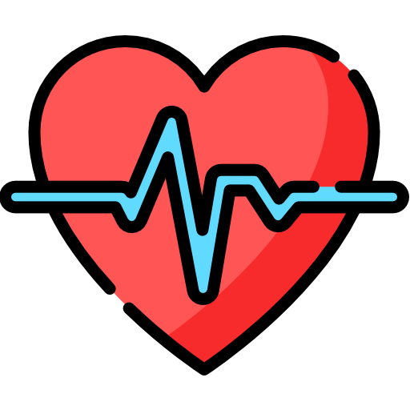
Participar en las actividades de capacitación y salud realizadas por SierraCol Energy y tu empresa
Procurar el cuidado integral de tu salud

Cumplir las normas, reglamentos e instrucciones de seguridad y salud en el trabajo
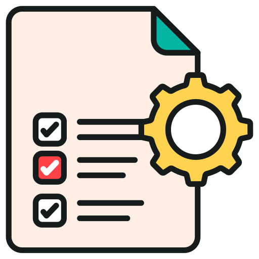
Informar oportunamente acerca de peligros y riesgos en el trabajo
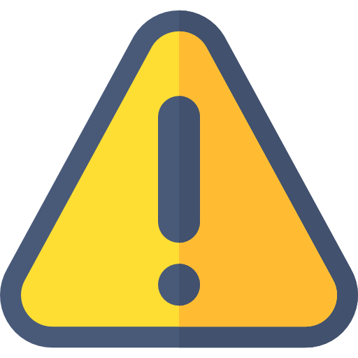
Ahora, te presentamos tus responsabilidades en temas ambientales:
Propender por el cuidado del medio ambiente

Cumplir con las normas, permisos y licencias establecidas para las diferentes operaciones de SierraCol Energy.

Reportar oportunamente situaciones que puedan generar impactos ambientales en tu sitio de trabajo o durante la realización de tus actividades

Cumplir el procedimiento para manejo de residuos sólidos (puntos ecológicos y código de colores)
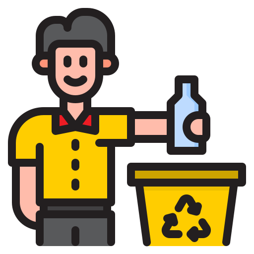
Conocer y aplicar en tu área lo establecido en las fichas del plan de manejo ambiental

Participar y contribuir al cumplimiento de los objetivos ambientales y los programas de gestión